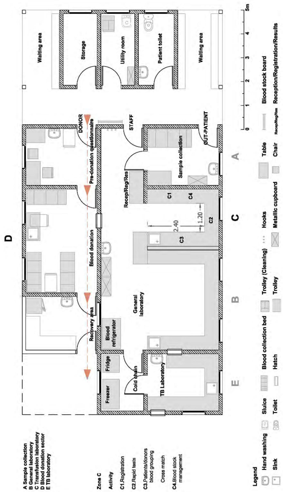

Chapter 4: Set up and management of transfusion activities
1. Setting up blood transfusion activities
1.1 Initial assessment
1.1.1 Assess blood needs
Health facilities that carry out few transfusions usually perform direct transfusions and do not have stored blood. In facilities that regularly carry out transfusions, setting up a blood transfusion department with stored blood, commonly called a "blood bank", ensures a constantly available supply of blood.
It is essential to estimate the number of blood units needed per week, or month, according to current or expected activity. Demand for blood is high in malaria endemic areas, nutritional centres and hospitals with obstetric and surgical activities, as well as in the event of an influx of wounded.
1.1.2 Assess external sources of blood
External sources include the national blood transfusion service (NBTS) or other hospitals.
The capacity of an external source to supply safe blood must be assessed by a health professional with the required competences. Below is a list of questions/criteria to be considered:
- Does the blood source belong to the national blood transfusion service, a governmental organization, a non-governmental organization, a private organization?
- How are donors recruited, selected and retained?
- Are blood donations identified with bar codes?
- Are tests results disclosed to donors and, if so, how?
- Are equipment, consumable items and reagents procured from validated sources?
- Are reagents stored under suitable conditions (temperature, humidity)?
- What test methods are used for blood grouping, red cell antibody screening and transfusion transmissible infections (TTI) screening?
- Are procedures manual or automated? Are results double-checked?
- How are the test results recorded? Manually or using information technology?
- What quality control procedures are there?
- Who is responsible for the supervision of the blood collection department and the laboratory?
- What is the reactivity rate for each TTI in blood donation? What is the local prevalence rate for each TTI in the adult population?
- How are unsafe/untested blood units stored, separated from qualified blood units and ultimately destroyed?
- Is cold chain performance satisfactory and monitored? During storage? Transport?
- Who (what institution) does the blood source report activity data and performance indicators to?
- How many blood units can the supplying facility provide in a given time frame?
If the evaluator cannot determine alone whether the source is reliable or not, they should ask a specialized professional to carry out the assessment.
Blood supply:
- Can be combined supply from an external source and donor blood collection within the health facility.
- Can be exclusively from either the NBTS or donor blood collection within the health facility.
1.1.3 Determine the feasibility of setting up a blood transfusion service
- Assess the availability of qualified medical staff (physicians, nurses, laboratory technicians) and their competencies in transfusion.
- Assess technical environment (power supply, available space, cold chain equipment and waste management).
- Determine needs in terms of staff recruitment and training, as well as equipment.
Evaluate advantages/disadvantages and cost effectiveness of setting up a blood transfusion department, based on this assessment. Alternatively, it may be appropriate to set up an effective patient referral system.
1.2 Setting up a blood transfusion activity
1.2.1 Obtain authorization from the health authorities and/or the NBTS
Obtain:
- The most recent national blood transfusion policy,
- National, or regional, blood donation promotion documents and donor retention tools.
Obtain authorization to:
- Store blood,
- Collect blood from donors,
- Organize mobile blood collections in specific areas.
1.2.2 Meet local leaders (political, religious or other)
Inform them that donors need to be recruited and try to obtain their collaboration in order to:
- Understand the community's level of acceptance/knowledge concerning blood donation.
- Identify which groups in the community are most susceptible to giving blood.
- Translate blood donation information and promotion tools into the local language.
In sub-Saharan Africa, secondary school pupils (16-18 years old) are a sizeable source of voluntary blood donations. Parental authorization for minors to give their blood must be obtained. Communication with school principals and science teachers is crucial in encouraging voluntary blood donation.
1.2.3 Order equipment according to needs
The transfusion module (Appendix 33) contains all the basic medical and laboratory equipment required to collect and provide 50 safe transfusions.
For cold chain equipment, see Chapter 4, Section 2.
1.2.4 Organize premises and waste management
See Chapter 4, Section 6 and Chapter 4, Section 7.
1.2.5 Train staff and ensure job descriptions are available for each position
Train staff in donor recruitment and selection, screening procedures, blood components indications and administration procedures, cold chain maintenance, consumable stock management, waste management.
For the list of tasks and responsibilities, see Chapter 4, Section 3. Each staff member must fully understand their role and responsibilities.
1.2.6 Ensure procedures are written, adapted to the context and applicable
1.2.7 Set up a data collection system
Data analysis helps evaluate if the transfusion activity matches needs in terms of quality and quantity. Data are usually collected on a monthly basis. A data collection tool, to be adapted to the context, is described in Appendix 32. In particular, monitor the reactivity rate of each TTI in blood donors, the rate of discarded qualified blood units and the average stock of blood units.
1.2.8 Set up the health facility's blood transfusion committee
This committee is responsible for the implementation of good transfusion practices. It includes the hospital director, at least one physician prescribing transfusions, the head nurse, the blood transfusion department supervisor, the pharmacist, the designated logistician or biomedical engineer and the designated health promoter. See Chapter 4, Section 4.
2. Storage, transport and stock management of blood units
The safe storage and transport of blood units is an integral component of blood safety.
2.1 Cold chain
2.1. Equipment required in a blood transfusion department
Refrigerators for storage of blood units
- Blood units should be stored in a special refrigerator with the following characteristics:
- Electric-powered.
- Super-insulated, with sufficient holdover time to keep the temperature below 8°C for at least 12 hours in the event of power failure.
- Cooling system, to maintain uniform temperature at all levels of the refrigerator.
- External thermometer display, for continuous monitoring of the temperature inside the refrigerator.
- Visual and audio alarm system, that signals when the temperature rises above 6 °C or falls below 2 °C.
These refrigerators should be used exclusively for the storage of blood. The number/size of refrigerators to be ordered depends of the estimated number of units to be stored. Due to its robustness and long holdover time the Electrolux MB 3000 G is one of the models recommended for storing blood units: chest format (horizontal door), holds 100 x 450 mL bags, walls lined with ice packs filled with water result in very efficient thermal inertia.
Gas-powered and petrol-powered refrigerators should not be used for blood storage: they do not perform as well as electric powered refrigerators and require constant attention and maintenance to ensure correct and stable temperatures.
Domestic refrigerators are not designed for blood storage. They have no external thermometer display, poor insulation and poor temperature regulation (e.g. risk of blood freezing in the event of contact with the walls of the refrigerator, rapid rise in temperature in the event of power failure).
- Reagents and diagnostic tests should be stored in a separate refrigerator (e.g. Vestfrost MK204® or Sibir V170®).
Cold boxes and vaccine carriers
- Cold boxes (e.g. Electrolux RCW®) are essential:
- To transport blood from an external source or mobile collection sites;
- To temporarily store blood, in the event of refrigerator dysfunction or during refrigerator defrosting.
- Vaccine carriers e.g. Gio'Style® are necessary to deliver blood from the blood transfusion department to wards if the delivery time exceeds 10 minutes.
Freezer and ice packs
A freezer (e.g. Vestfrost MF 114 (ou 214)®) is necessary to produce ice packs and, if applicable, store FFP.
Temperature-monitoring devices
Every refrigerator must contain 3 types of temperature monitoring devices:
- A min-max thermometer records the minimum and maximum temperatures (temperature range -50°C to +50°C) reached since the last reset.
- A "Fridge Tag 2" temperature data logger fitted with an external probe placed in a glycol vial. The device displays the temperature inside the refrigerator without opening the door and records all temperatures over the last 30 days. The glycol mimics blood temperature and is insensitive to air temperature variations when opening the fridge door (see Appendix 36.1).
- A freezing indicator device: such as Freeze-tag®. This device indicates when the temperature inside the refrigerator/cold box has dropped to 0°C (± 0.3°C) for over one hour (Appendix 36.2).
Remote alarm system
When the blood refrigerator is in a place where staff is not present 24/7, a simple robust remote alarm system can be connected to the dry relay contacts of the blood refrigerator. The alarm alerts healthcare staff on duty within a range of 50 metres in the event of any abnormal temperature fluctuations. Alerted staff informs the person in charge of blood storage.
2.1.2 Electric power supply
Electricity can be supplied by a local provider, by a generator or by solar panels, provided the power is sufficient, the voltage is stable, and the supply is uninterrupted. If there is a risk of power cuts/breakdowns lasting over an hour, backup power (i.e. batteries) must be set up and ready. The blood transfusion department supervisor together with the logistics officer, are responsible for the correct functioning of the electric power supply and training staff how to use the back-up system.
2.1.3 Cold chain maintenance
The logistics officer ensures the maintenance of cold chain equipment: checking and maintaining refrigerator gaskets, monthly checking of alarm systems and thermostats, changing alarm systems batteries and cleaning condensers every 6 months.
The blood bank supervisor ensures that the refrigerators are clean and regularly de-iced.
2.2 Blood storage conditions
2.2.1 Blood storage temperature
Long term storage temperature to keep red cells functional and inhibit bacterial growth is between 2 °C and 8 °C. The refrigerator thermostat is set at 4 °C +/- 2 °C. An upper limit of 8 °C is correct.
If blood is not intended to be transfused within 4 hours, leave it to cool down at a temperature between 18-24°C (in a temperate cool box or in an air-conditioned place or under a ventilator by using a wet linen) for 2 to 4 hours. This allows the donor's white blood cells to exercise their bactericidal effect. In addition, this avoids placing warm blood in the blood refrigerator. Then blood must be stored in cold chain with a thermostat set at 4°C +/- 2°C.
Notes:
- If TTI tests have not been completed make sure the blood bags are clearly labelled as nonqualified for transfusion and stored completely separate from qualified blood units.
- During mobile collection sessions, blood donations are placed in a cool-box maintained between 2°C and 8°C until they can be stored in the refrigerator.
- Once stored in the refrigerator, blood units are not removed until they are to be transfused, except for performing tests on the distal tube and preparation of paediatric units.
- Blood must never be frozen, as freezing causes red cell haemolysis.
Storage in blood refrigerator
Avoid repeated opening and closing of refrigerators. To ensure the correct circulation of cold air, avoid overfilling refrigerators.
If there are only a few blood units in a refrigerator, fill bottles or icepacks with non-frozen water to increase the thermal inertia of the refrigerator.
Storage in cold box
Ensure that blood units are not in direct contact with ice packs. Frozen ice packs are preconditioned. Use pieces of cardboard or bubble wrap to prevent the blood units from touching the icepacks.
Discard any blood unit that has been:
- Out of the cold chain for more than 30 minutes. Re-cooling blood that has reached room temperature may stop bacterial growth but it does not prevent the release of endotoxins.
- Stored in cold chain at a temperature > 8°C.
- Exposed to freezing temperatures (freezing indicator device displays ALARM).
2.2.2 Temperature monitoring
A staff member from the transfusion service or the laboratory must be specifically appointed and trained to monitor the temperature of all cold chain appliances. A second person should be identified to replace this person in the event of absence.
The logistics officer responsible for maintenance of the cold chain must be informed immediately in the event of a cooling system dysfunction.
Depending on the cause/duration of the break in the cold chain and the refrigerator holdover time, the transfusion department supervisor will decide whether to transfer blood to another refrigerator or, failing that, to cool boxes.
Refrigerator temperatures must be checked and recorded on the monitoring sheet (Appendix 35) twice daily, 7 DAYS PER WEEK.
Min-max thermometers must be reset after each reading.
Temperatures must be monitored in the same way if blood is temporarily stored in cold boxes during refrigerator breakdown or de-icing periods.
Note: temperature devices inside cool boxes must be checked at delivery point.
2.3 Transport of blood units
From the transfusion department to the wards
Blood units to be used within 2 hours must be transported in a vaccine carrier if it takes more than 10 minutes to take them from the blood refrigerator to the ward. If the transfusion is delayed, blood units must be returned to the refrigerator in the blood transfusion department and kept reserved for the recipient.
From mobile collection to the blood transfusion department
Blood donations, once pre-cooled at between 18-24°C, are placed and transported in a cool box at between 2 °C and 8 °C until they can be stored in the refrigerator.
2.4 Blood shelf life
Blood shelf life depends on the preservative solution used (e.g. CPDA-1, SAGM). Check the manufacturer's recommendations. Usually:
- CPDA-1: whole blood and PRBC can be stored for 35 days.
- SAGM: PRBC can be stored for 42 days. This type of blood bag is only used in transfusion centres equipped with blood bag centrifuges.
2.5 Blood stock management
Tested blood units are stored in a refrigerator:
- By blood group (A, B, AB, O and Rh D positive and negative) and expiry date; e.g. all A Rh D positive units are placed together in a basket with the unit expiring first at the front of the basket.
- In an upright position, outlet port pointing down if concentrated red cells are to be transfused (Appendix 12).
Note: if non-tested blood units need to be stored, place them apart in the refrigerator in a specific basket clearly labelled 'not-qualified for transfusion'.
2.6 Stock follow-up
A blood stock/delivery register is used to record entries and deliveries of blood units (Appendix 29). The register must be used to choose the most appropriate blood unit according to the patient's blood group and specific needs as well as the expiry date.
A whiteboard is used to keep a daily updated record of blood available in stock. The board must be visible at all times by the clinical staff and needs to be updated every day.
A physical inventory must be carried out once a week to check unit by unit that the units in storage (physical stock) match the units noted in the stock register. This is an opportunity to note either units that are in the physical stock but not recorded in the register, or units that have been issued but not recorded as taken out of stock in the register. Possible errors can be detected and corrected by checking the transfused patients register or the blood order/ delivery forms.
The minimum stock level should be determined according to transfusion activity and the distribution of blood groups in the population. Group O blood should always be available in stock. To be noted, 50% of the population is group O nearly everywhere in sub-Sahara Africa. A minimum security stock to cover 10 days of consumption is recommended. Ordering of blood units and/or organizing mobile blood collection sessions must be scheduled to maintain a sufficient stock of blood.
Small health facilities often have insufficient stocks and as a consequence:
- The lack of blood leads to families being pressured into blood donation which is strongly discouraged.
- If the family or relatives cannot find a donor(s), the family may resort to paying for donors; this must be avoided at all costs.
When there are a large number of blood units to be discarded, identify the underlying causes (e.g. stock management problems, frequent breaks in the cold chain, screening after donation in an area with a high prevalence of TTI, reduction in blood requirements) and find solutions to address these issues.
2.7 Blood units received from external sources
Check the delivery form
The delivery form should indicate the time the blood units were taken out of the refrigerator as well as each blood unit's details: unit number, type of blood component (whole blood, PRBC), group, volume, date of collection and expiry date.
Check if the delivery form matches the initial order and the units supplied.
Check transport conditions
Check time elapsed in transport, and the temperature devices inside the cold box:
- The temperature should be between 2°C and 8°C.
- The freezing indicator device should not display ALARM.
- The blood units should not be in direct contact with the ice packs.
If there is no thermometer in the cold box, place one between 2 blood units. If the temperature is > 8°C, discard or return the blood units and notify the supplier and the person in charge of transportation in order to obtain replacement blood units.
Check each blood unit
- Check that the information on the label is readable and complete (blood group, date of collection and expiry date, type of component, volume, TTI test results).
- Check that the tubing length is adequate (at least 50 cm ), that the knots in the tubing are correctly tightened and that there is no leakage.
- Check the appearance of red cells and plasma: red cells should be dark red, plasma should be bright yellow and no clots should be seen. On visual observation, the proportion of red cells in a unit of whole blood, if fully sedimented, should be at least 1/3 of the blood bag content.
Discard the unit (or return to the NBTS) if clots are visible, if red cells are purple, brown or black, if plasma is pink or pale yellow or if the proportion of red cells seems too low.
- Check that the blood bags are correctly filled and if in doubt, weigh the blood units. For example, filled bags of whole blood gross weight is approximately:
- 150 mL bag: between 188 g and 219 g
- 250 mL bag: between 301 g and 354 g
- 450 mL bag: between 528 g and 622 g
Check the weight of the empty bags with the health facility that has provided the blood or the manufacturer.
- Repeat the blood grouping and TTI screening on the distal segment of the tubing, unless the external source of blood supply has been assessed by a competent medical professional and is considered reliable.
3. Staff responsibilities
| Position | Tasks and responsibilities |
|---|---|
| Chief Medical Officer (or Hospital Director or medical referent) | - Obtain authorization from the Ministry of Health to set up blood transfusion activities in health facility. - Assess the quality/capacity of external sources of blood, in collaboration with a laboratory/transfusion advisor, if necessary. - Organise training sessions with the head nurse, physicians and laboratory technicians. - Ensure that written, updated and context adapted procedures are available and followed. - Oversee the blood transfusion activity including analysis of quality indicators. |
| Physicians/ Anaesthetists | - Assess the risks/benefits of transfusion for each patient. - Answer patient's questions and concerns related to transfusion. - Obtain written informed consent from the patient or their legal guardian or witness. - Prescribe the transfusion and note the reason for transfusion in the patient file. - Fill in and sign the blood request form. - Manage transfusion adverse reactions. - Examine the patient at the end of the transfusion and record observations in the patient's file. - Fill in the transfusion reaction form in the event of an adverse reaction. - Supervise staff in charge of donor selection. |
| Ward nurses | - Collect and label blood samples. - Perform Hb level and blood grouping if there are no laboratory technicians available. - Check patient's identity and concordance with the blood unit to be transfused and the delivery form. - Perform bedside ABO compatibility test prior to transfusion. - Carry out the transfusion. - Monitor the patient before, during and after transfusion and fill in the monitoring sheet. - Alert the physician in the event of adverse reactions and fill in the transfusion reaction form. - Supervise waste management on the ward. |
| Health promotors | - In the health facility: participate in informing families about how important it is to 'replace' the blood their relative has received. - In the community: together with local leaders, identify suitable sites to promote blood donation. - Involve local radio stations in blood donation promotion messages. - Participate in drafting blood donation documents and oral and visual messages. - Facilitate the creation of a local blood donors association. - Participate in the organization of world blood donor day on June 14th. |
| Staff in charge of blood collection | - Recruit donors and promote blood donation. - Select donors (questionnaire, physical examination, Hb test); refer donors to physician in the event of doubt (e.g. if on medication) or in the event of abnormality on physical examination. - Answer donors 'questions/concerns. - Ensure that the blood collection room is clean, welcoming and comfortable. - Perform blood collection. - Take care of the donor during and after collection. - Ensure adequate waste management in the collection room. |
| Laboratory technicians | - Measure Hb and perform donor and patient blood grouping, TTI screening tests and crossmatching. - Issue compatible blood units. - Fill in and sign delivery forms. - Fill in registers. - Manage the blood stock. - Order, receive and check blood units from external sources. - Ensure proper storage of blood units. - Check that the cold chain is functioning correctly (including temperature monitoring). - Notify the logistics officer in the event of cold chain problems. - Ensure correct waste management in the blood transfusion service. |
| Blood transfusion department supervisor | - Organize staff duty roster. - Organize the training of laboratory staff, ward nurses, blood collection nurses. - Ensure all documentation (registers, forms) is updated and all records saved and archived. - Participate in donor recruitment: raising family awareness, promotion of voluntary blood donation, organization of mobile blood collection. - Prepare the weekly or monthly consumable orders. - Collect, analyse and transmit monthly data. |
| Pharmacist | - Manage the stock of materials and tests/reagents in the pharmacy. - If blood is stored in the pharmacy, monitor the cold chain. These responsibilities can be shared with the laboratory technician, depending on the human resources available and the division of tasks. |
| Logistics officer | - Plan the layout of the laboratory/blood transfusion department with the blood transfusion supervisor and head of the facility. - Supervise the construction and organization of the premises. - Set up and ensure maintenance of the cold chain, including backup power. - Set up a waste management system. - Organize transport (vehicles for blood drives/blood units from external sources). |
4. Hospital Transfusion Committee
Safe and effective transfusion practices require a multidisciplinary approach.
The hospital transfusion committee's role is to ensure the implementation of transfusion safety, good transfusion practices and quality assurance.
Composition of the hospital transfusion committee
The hospital transfusion committee should be headed by the clinician of one of the wards with most transfusion needs, or by the hospital director.
The hospital transfusion committee should include a member of each profession involved in the transfusion chain:
- Prescriber of blood components,
- Head nurse,
- Supervisor of the blood transfusion department,
- Pharmacist,
- Logistics officer,
- Health promoter.
The role of the hospital transfusion committee is to:
- Elaborate policies and procedures (donor recruitment and selection, blood component indications, patient information, identification of samples and blood components, storage and transport conditions of blood components, blood administration , waste management etc.), and give advices on their implementation.
- Ensure a non-interrupted supply of blood and a sufficient blood stock.
- Ensure the rational use of blood and regularly carry out reviews of patient 'files.
- Set up a haemovigilance system: systematic data collection on adverse effects, discussions with clinicians and transfusion service staff to establish if a major adverse event was definitely, probably or unlikely related to transfusion and if appropriate corrective measures were taken.
- Carry out critical analyses of data, including the number of blood units discarded.
- Approve HR and material/equipment needs, and provide technical support if needed.
- Facilitate staff training.
- Analyse causes of error or dysfunction and implement corrective measures.
- Transmit activity reports to the national blood transfusion service.
- Elaborate a contingency plan for mass casualties or an unusually high need of blood.
- Ensure the safety of staff and patient at all stages.
Meetings should initially be held monthly, then every 3 months when transfusion activities are running satisfactorily. Ad hoc meetings may be held in the event of serious incidents or exceptional events.
5. Quality assurance in blood transfusion
The quality assurance system rests on four pillars:
5.1 Staff
Staff should be:
- Qualified,
- Trained in the application of standard procedures,
- Aware of their tasks and responsibilities,
- Supervised.
5.2 Procedures
Procedures are:
- Appropriate to the context and available equipment,
- Acknowledged, understood and implemented by staff,
- Updated at least once a year.
5.3 Premises and equipment
- Premises are functional and suitable for the activity.
- Equipment comes from a validated source, is checked and maintained regularly.
- Reagents/kits and blood bags come from a validated source and stored according to the manufacturer's recommendations.
- Laboratory equipment is calibrated on installation and at regular intervals.
5.4 Documentation
Documentation includes:
- Organizational details and description of the transfusion process (procedures, flow charts, etc.).
- Staff safety policy (hepatitis B vaccination for all staff exposed to blood, procedure in the event of accidental exposure to blood, etc.).
- Reference and training documents.
- Instruction leaflets for equipment, reagents, test kits.
- Standard operating procedures for every test carried out.
- Registers.
- Workbench logbook (tests performed, reagent quality control, etc.).
- Forms (order/delivery forms, pre-donation questionnaire, monitoring and transfusion reaction forms, stock cards, etc.).
- Archived documents (forms and registers, results, quality controls, activity reports, etc.).
Regular critical analyses should be performed on the data collected from registers/documents by the blood transfusion committee.
5.5 Follow-up and methods for improving practices
The quality assurance process aims to improve practices with the active participation of all staff involved.
Problems and errors must be discussed and analysed by the blood transfusion committee, in order to understand how and why, and to quickly take corrective action that is communicated to all health staff.
6. Layout of premises
A transfusion department must include:
- A waiting area for blood donors.
- A consultation room for conducting the questionnaire and examining donors. This room must be designed to provide the necessary confidentiality conditions for medical interview.
- A well ventilated blood collection room.
- A recovery area where the donor is monitored after blood collection for 15 minutes after the donation; donors must always be in view of staff.
- A laboratory room.
- A storage room with cold chain equipment. The room should be air conditioned or at least well ventilated. Allow enough space (50-60 cm) behind the refrigerator(s) for air circulation.
Notes:
- Areas 2 and 3 may be set up in the same room if there are only few donors at a time (less than 5 donors per day).
- Areas 5 and 6 may also be in the same room.
See standard layout on the following page.
7. Waste management
Blood units (and materials in contact with blood such as bags or tubes) are infectious waste, even with negative TTI screening.
Adequate medical waste management must be set up from the start of transfusion activities, regardless of whether the transfusion service is set up in an emergency or stable setting. If there is a hygiene/infection control committee in the health facility, it must play a central role in medical waste management.
In order to minimize the risk of accidental exposure to blood, staff in charge of waste management (laboratory technician, cleaners) should be adequately protected (i.e. gloves, goggles, protective clothing) when handling and disposing of blood. It is recommended to offer vaccination against hepatitis B and tetanus. If possible, waste from transfusion activities should be treated on site to avoid contamination risks or re-use.
The disposal of large volumes of infected, expired or damaged blood units is complex. Every effort should be made to minimize the volume of blood requiring disposal.
Blood units that cannot be used (infected, expired or exposed to a break in the cold chain) must be discarded quickly. Blood units that cannot be discarded immediately should be removed from the refrigerator and placed under lock and key in a container clearly labelled "blood for destruction" (to avoid the intentional or mistaken use).
7.1 Waste disposal methods
Incineration
Blood units and sample tubes must be incinerated without being emptied beforehand. This technique requires a powerful incinerator, since blood, like any liquid, will extinguish a fire that is not strong enough. The incinerator must be preheated. Blood units must be placed in the incinerator one by one. Fuel should be added as required. It is important that the incineration process is correctly carried out to avoid the production of toxic gases such as dioxins or furans.
Burying
Cement pit
Blood units and sample tubes are discarded into a cement pit, without being emptied beforehand. The pit is filled with cement when it is full. This method requires sufficient available space.
Organic pit
The blood of unused blood units may be emptied into an organic pit, then the bags can be discarded as for empty blood bags (see below). The bags should be cut with scissors to avoid blood splashing. Bags should not be pierced.
7.2 Waste material
Empty blood bags after transfusion
Empty blood bags after transfusion may be incinerated or buried in a cement pit.
Sample tubes
Blood from sample tubes can be poured down the drain of the laboratory sink and flushed down with a 1% active chlorine solution. The empty tubes must then be disposed of as contaminated medical waste. This method is only possible if the use of chlorine is authorised in the sewage system. If chlorine use is not authorised, the sample tubes must be incinerated.
Note: this method should not be used for unused blood units.
Needles
Needles are never recapped and are discarded in sharps containers.
If large quantities of blood units need to be destroyed, ask the national blood transfusion service for technical advice.
References Chapter 4
- WHO, Design Guidelines for Blood Centers, Western Pacific Region, 2010. http://www.who.int/bloodsafety/publications/DesignGuideBloodCentres.pdf?ua=1
- WHO, National Standard for Blood Transfusion Service, Edition 1-2013. http://www.who.int/bloodsafety/transfusion_services/BhutanNationalStandardsBTServices.pdf
- National Blood Authority, Australia, managing blood and blood product inventory. Guidelines for Australian Health Providers, 2014. https://www.blood.gov.au/system/files/documents/managing-blood-and-blood-productinventory.pdf
- Ira A.Shulman, Sunita Saxena, The Transfusion Services Committee-Responsibilities and response to Adverse Transfusion Events, ASH Education Book, January 1, 2005, vol 1, n° 1 483-490. http://asheducationbook.hematologylibrary.org/content/2005/1/483.full.pdf+html
- Medical waste management, ICRC 2011. https://www.icrc.org/eng/assets/files/publications/icrc-002-4032.pdf
- Safe management of wastes from health care activities, 2nd Edition, WHO 2014. https://www.healthcare-waste.org/fileadmin/user_upload/resources/Safe-Management-of-Wastes-from-Health-Care-Activities-2.pdf